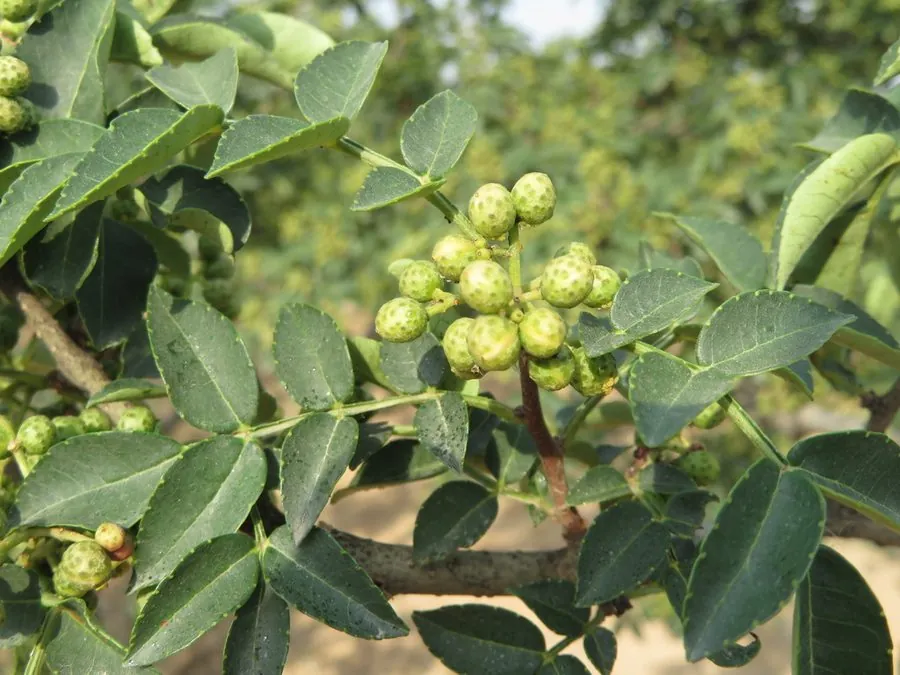

农作物与经济植物 · 植物界
花椒 Zanthoxylum bungeanum

花椒是芸香科落叶小乔木，果皮麻香浓郁，是川菜的重要调料，也可提取花椒油，中国栽培历史十分悠久。
- 分类
- 门被子植物门纲双子叶植物纲目芸香目科芸香科属花椒属
- 栖息环境
- 温带山地与丘陵，喜光、耐旱、怕涝
- 地理分布
- 原产中国，主产于四川、陕西、甘肃、河北等地
- 保护级别
- 暂无评估（栽培作物）
物种志
花椒是芸香科落叶小乔木或灌木，株高 3–7 m，枝干有皮刺。叶片奇数羽状复叶，小叶 5–11 枚，卵形，边缘有细锯齿。花小，黄绿色，聚伞花序。果实为蓇葖果，成熟时红色或紫红，表面有疣状油点，沿腹缝线开裂，内含黑色种子，果皮麻香。
花椒原产中国，栽培历史超过两千年，《诗经》中已有记载。它喜光、耐旱耐瘠，适宜在温暖干燥、排水良好的山地生长。果实秋季成熟，采收后晒干，果皮即花椒，可作调料、榨花椒油；种子可榨油，木材可制器具。四川汉源、陕西韩城、甘肃武都等地是著名产区，花椒也是川菜“麻”味的主要来源。花椒籽可榨油，油饼可作肥料，鲜花椒也可冷冻保存。
形态与习性
- 株高3–7 m，落叶小乔木或灌木
- 枝干有皮刺
- 叶奇数羽状复叶
- 果实红色蓇葖果，有油点
- 成熟期秋季
- 用途调料、花椒油与药用
趣味知识
- 花椒的麻味来自果皮中的花椒麻素。
- 花椒原产中国，四川汉源、陕西韩城是著名产区。
- 花椒果皮上的疣状油点富含芳香油。